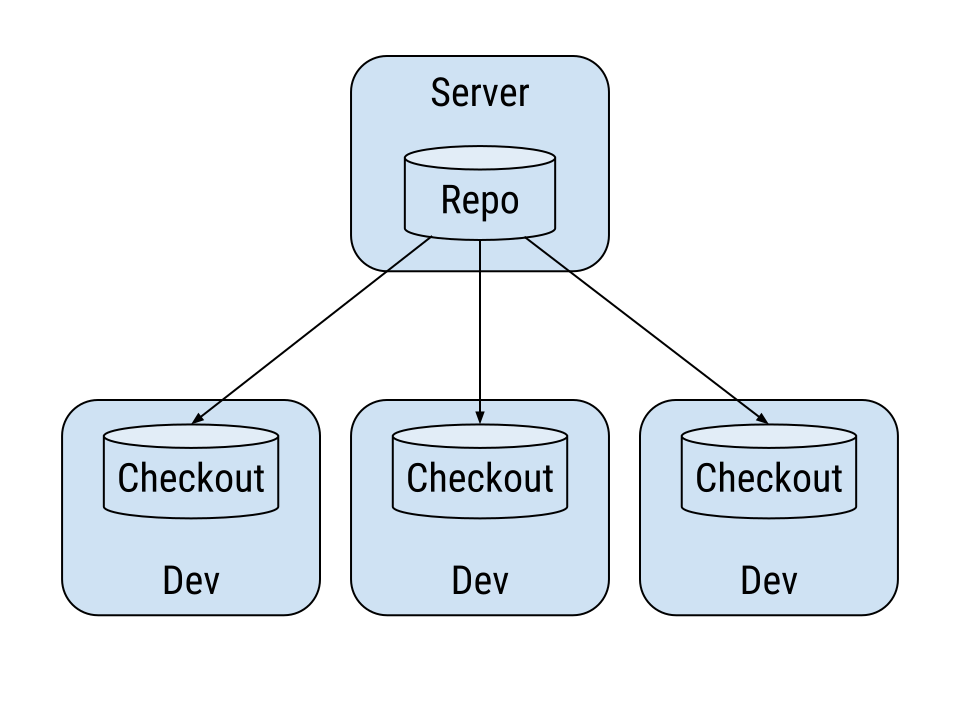
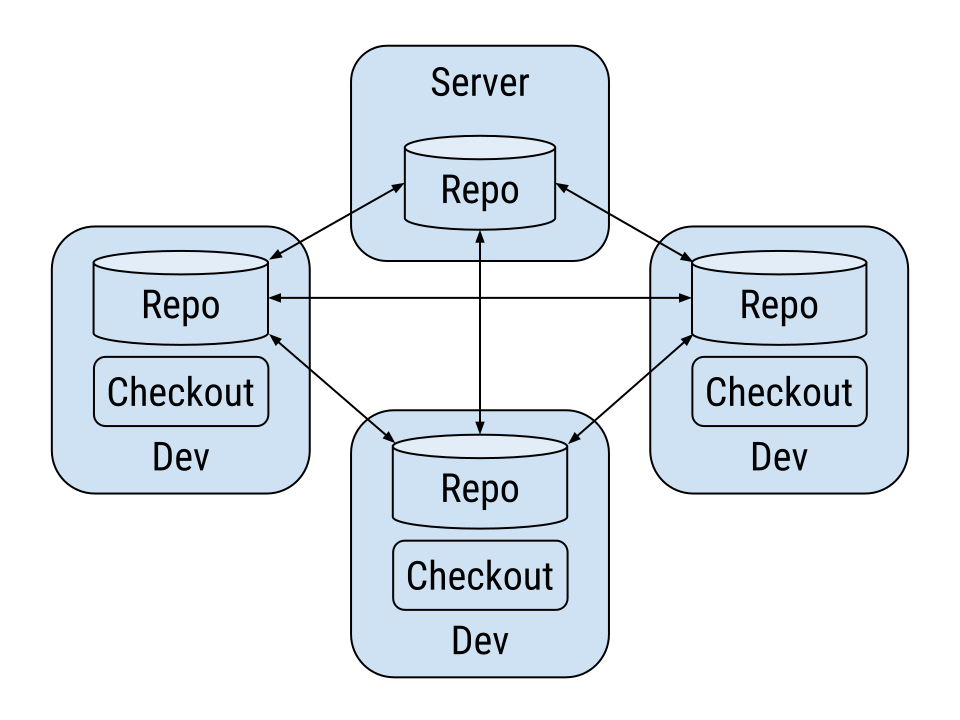
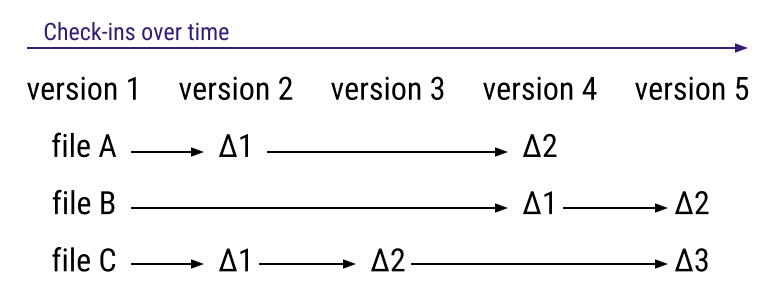
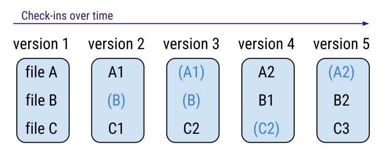
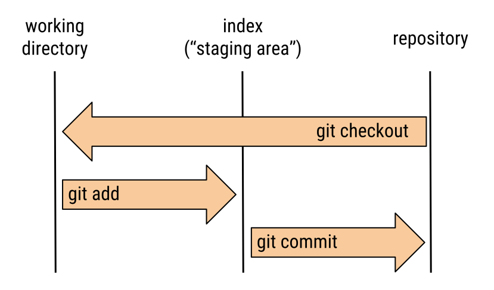

the stupid content tracker
vs




$ cd /my/code
$ git init
Initialized empty Git repository in /my/code/.git/
.git/
$ git checkout -b ISSUE-1234
Switched to a new branch 'ISSUE-1234'
# Create a new branch.
$ git branch ISSUE-1234
# Check out the branch.
$ git checkout ISSUE-1234
# Check out a newly created branch.
$ git checkout -b ISSUE-1234
$ git add myfile.php
$ git commit -m "Allow to foo a bar."
# Add file contents to the index
$ git add <path>
# Record changes to the repository
$ git commit -m "Log message"

What is in it?
$ git show
commit e7a69c08977680bfaa4b85fc2e5f43251ddddcb1
Author: Pieter Frenssen <pieter@example.com>
Date: Mon Mar 9 16:20:51 2015 +0100
Greet the world.
diff --git a/hello.php b/hello.php
@@ -0,0 +1,1 @@
+<?php echo "Hello world." ?>
commit e7a69c08977680bfaa4b85fc2e5f43251ddddcb1
$ git checkout e7a69c089
$ git checkout mybranch
$ git checkout 1.3.5
$ git checkout origin/develop
$ git checkout HEAD
.git/refs
# Cloning a remote repository
$ git clone https://host.com/code.git myrepo
# Adding a remote to an existing repo
$ git remote add myremote https://host.com/somerepo.git
# Download latest changes
$ git fetch myremote
# Merge with latest upstream code
$ git merge myremote/somebranch
# Shorthand for download + merge
$ git pull myremote somebranch
# First merge the upstream changes
$ git pull myrepo mybranch
# Push our changes to the remote
$ git push myrepo mybranch
# This is just too verbose
$ git pull myremote mybranch
$ git push myremote mybranch
# Link my local branch with the remote
$ git branch --set-upstream-to=myremote/mybranch
# Much better!
$ git pull
$ git push
$ git status
$ git log
$ git show <ref>
$ git branch -a
$ git remote -v
# Show changes that are not yet added to the index
$ git diff
# Show changes that are about to be committed
$ git diff --cached
# Show changes between my code and remote repo
$ git diff origin/develop
# Show changes between two refs
$ git diff mybranch..origin/2.0.4
# Delete everything from the index
$ git reset
# Delete everything from working copy
$ git reset --hard
# Delete uncommitted files
$ git clean -fd
# Search commit messages
$ git log --grep="keywords"
# Search lines of code
$ git log -G"regex"
# Search when code was added / deleted
$ git log -S"regex"
# Temporarily stow away all changes
$ git stash
# Restore the changes
$ git stash pop
# Show the list of stashed changes
$ git stash list
# Stage the adding of a new file
$ git add <filename>
# Stage the removal of an existing file
$ git rm <filename>
# Stage the renaming / moving of a file
$ git mv <filename>
# Tag a new release
$ git tag 2.1.0
# Find the change that introduced a bug
$ git bisect
# Graphical diff / merge
$ git difftool
$ git mergetool